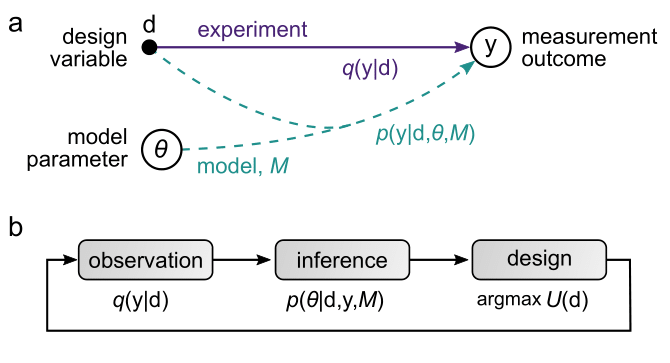

About hierarchy
Welcome to hierarchy, a blog about using regression, causal inference, machine learning, and hierarchical (multilevel) modeling to distinguish signal from noise. More broadly, we’re going to use computational statistics to:
- measure unknowns
- think generatively
- quantify “luck” and “surprise”
- visualize and communicate the implications of our model & inference
I (Kiran) did my PhD in the Bishop Group at Columbia University, graduating in August 2022, where I defended my thesis on optimal experimental design for hierarchical, nonlinear systems to characterize and design autonomous behaviours in microrobots. You can find it here. My goal was to use external fields (think magnetic, acoustic) to encode behaviours into microscale colloids to help them autonomously sense their environment, and accomplish tasks in noisy environments, like suppressing dendrite formation in lithium ion batteries, swimming against the flow to deliver cargo, and sniffing your way through stochastic chemical gradients.
These are all part of the larger subset of distinguishing signal from noise, and the statistical models I worked on can be applied to autonomous driving, predicting venture captial risk, and selecting optimal dosing regimens for rare diseases, among many other applications. We’ll use tools from probability and information theory, and leverage modern compute and other tricks to answer these problems, refining our models and understanding as we go.
Some initial thoughts
Experimental design quantifies the value of data
I started thinking about the value of data early on in grad school, because my experiments took a long time to run and a lot of them gave me useless results. As an added complication, my setup varied slightly every day, so I had to constantly recalibrate my understanding of the underlying parameters of my system. That led me to thinking about experimental design to suggest maximally informative experiments conditional on the data that I’ve already observed. I highly recommend this excellent paper from Tom Loredo which got me started about thinking in terms of probabilities and distributions, and how we quantify information using entropy. See the section on experimental design for more info.
Why do I believe in statistical modeling?
Chris Rackauckas said in a talk that “the major advances in machine learning were due to encoding more structure into the model” with a subquote of “more structure = faster and better fits from data” and that sums it up pretty well. I think that building models that more closely resemble the “true” data generating process are our best hope of actually learning what’s going on under the hood. And although it’s fun to throw compute at a problem, I believe in failing fast and in the power of the iterative model building workflow often using coarse-grained models and approximate inference.
This perspective was perfectly summarized by George Box when he said that “all models are wrong, but some are useful”. If our models are only ever an approximation of reality, and our compute, and mental sanity are finite, then it’s worth it to see what we can get away with before we build out luxurious models.
Our goal is then to find a model, \(M\), that is that is an efficient coarse-grained of reality,

Any qualms
,
multimodality
folk theorem of statistical computation
intersection of what cna be done and what should be done, is the juice worth the squeeze
distinguish signal from noise
hierarcchal models are everywhere
astronomy (not astrology, I checked), psychology, psychometrics, ecology, econometrics,
Experimental design Other great papers to use as introductory material to experimental design are Huan and Marzouk’s paper, Dennis Lindley’s entire catalog, but this paper in particular, and Andrew Gelman’s entire catalog, footnotes, and this paper.
Why his footnotes? I can’t find the quote now (if you remember it, email me!) but it went something along the lines of “every original thought you’ve ever had about statistics has already been published by Andrew [Gelman] in a footnote of a paper from the 1970s”.
I’m Kiran and I’m a computational statistician, graduating with my PhD from Columbia University other topics to figure out if the juice is worth the squeeze. I’ll be programming in Python, R, Stan, and Julia, and am a huge advocate of failing fast, model parsimony, and Occam’s razor, so we’ll be timing, multiprocessing, broadcasting, and using whichever backend can get us a close-enough answer fastest.
I did my PhD in the Bishop group ………………………… I wrote my dissertation using PyMC3 (now PyMC), and have recently switched to Stan because I’ve been writing in R a lot more. This blog will also give me a chance to revisit PyMC, Pyro and NumPyro (built on top of PyTorch), TFP (built on top of TensorFlow), and Turing.jl to see which is fast and readable.
I also think that visualization is a huge part of my workflow, which is why I’ve been super impressed with the ease-of-use of the brms package (not to mention Paul’s support on GitHub and the Stan Discourse), because getting inferential models to act generatively is pretty clunky and requires custom code to develop good visuals. brms takes care of this for you. To my knowledge, there’s no Python equivalent so we’ll flip back and forth depending on how far we are in the prototyping stage.
My favourite book right now is Richard McElreath’s “Statistical Rethinking”, and his accompanying lecture series which are both incredibly well written / produced, and are great discussions of challenges with asking the “oracle” of regression seemingly innocuous questions (see the height ~ +
model for a great example).
I believe that there’s huge value in modeling data hierarchially, where groups of individuals are drawn from a population and we’d like to have information flow between them, but these models are often slow, hard to fit, and are usually much harder to set up than conventional non-hierarchical models. I’m hoping to have a repository that acts as a bridge between the different languages, and packages, so that we can all benefit from the massive amount of documentation and knowledge that has already been shared.
I may make errors, if you see one, please email kiran.gauthier@columbia.edu me or leave a comment and I’ll revise it!
Library I’ll fill this later.
Other blogs I read Gelman Betancourt Frank Harrell Aki Vehtari
Posts to come BridgeStan Simpson’s paradox Bonferroni correction Talking about interactions
Wish list item: see how information flows between parameters, include something about synthetic data generation.
Add draft: true to the document options if you’d like a post to not be included in the listing, site map, or site search. For example: #— title: “My Post” description: “Post description” author: “Fizz McPhee” date: “5/22/2021” draft: true #—